1. Background: Webpage Selection and Analysis
Webpage Selection
When thinking about a webpage to redesign, Bagel Gourmet's website came to mind
as I remembered it won as the lowest accessibility rating found during class.
The design stood out to me as I liked the fun personality and welcoming message, so I thought it would be
interesting to use as a case study to improve their consistency and presentation which were impacting their accessibility rating.
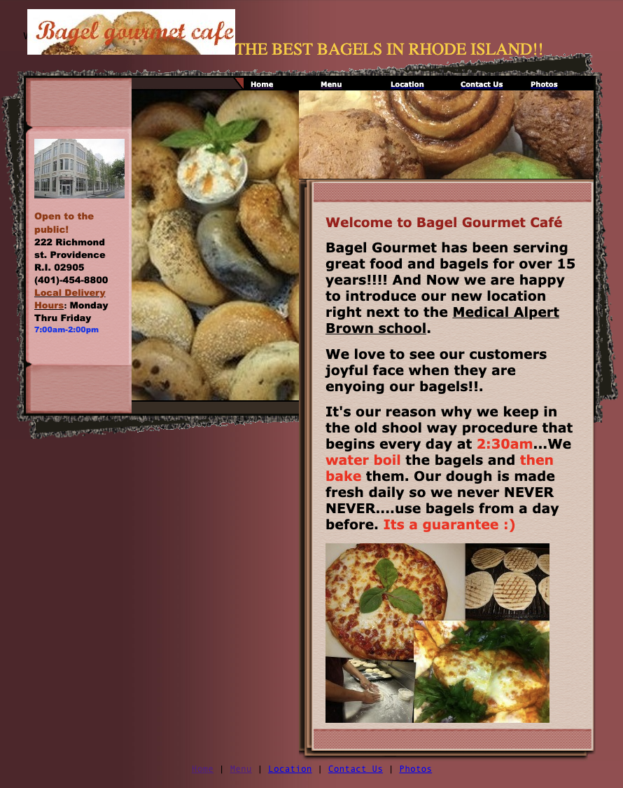
See the original webpage here.
Finding Problems
Accessibility issues for users with low vision or motor disability:
- Low color contrast in the "Bagel gourmet cafe" title at the top left.
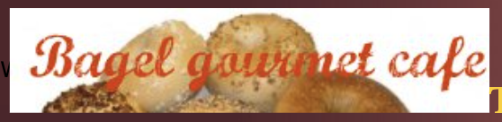
- Very low color contrast in the bottom footer.
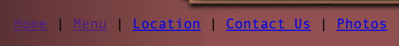
- Navigation bar on the top demands precision since the bar is very narrow.
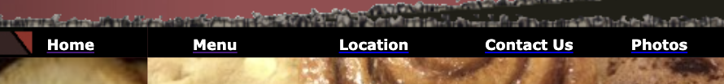
- Relies heavily on color and text placement for structure. The
structure also does not follow a linear logical layout.
Examining learnability, memorability, and efficiency:
-
Difficult to find phone number/store hours as info is hidden in
the end of the text below location and contact info.
-
Blue and underlined
texts that seem like links due to being blue or underlined, but then they are not clickable.
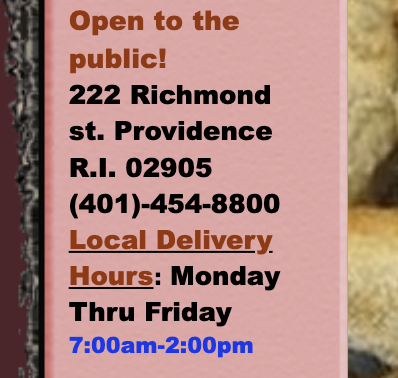
-
Efficiency: A common task users might go to the website for would be to contact the cafe to place an order/inquiry
(if they don't want to call to do it).
This is not very easy to do as you have to click through one of the contact buttons in the top or bottom menu.
Summary using WebAIM WAVE detection:
- Errors: Missing page titles/headings
- Contrast errors: 12 very low contrast errors
- Alerts: No page regions, 5x very small text, 2x underlined text, 10x layout tables
- Features: 18x Null or empty alternative text
I found that WebAIM WAVE detected a high number of text readability issues with contrast and small text,
which I would agree with. The page is also difficult to navigate because of there being no clear page title
or sections with headings. Lastly, the images don’t have alternative text which can also be an accessibility
issue even though the images don’t necessarily play a huge role in the page.
After analyzing potential accessibility issues through these various methods, I began to brainstorm improvements.
2. Visual Redesign: Sketches, Style Guide, Wireframing
Speed Sketching
For the first step of my visual redesign process, I used Procreate to create 9 speed sketches,
setting aside approximately 1 minute per sketch.
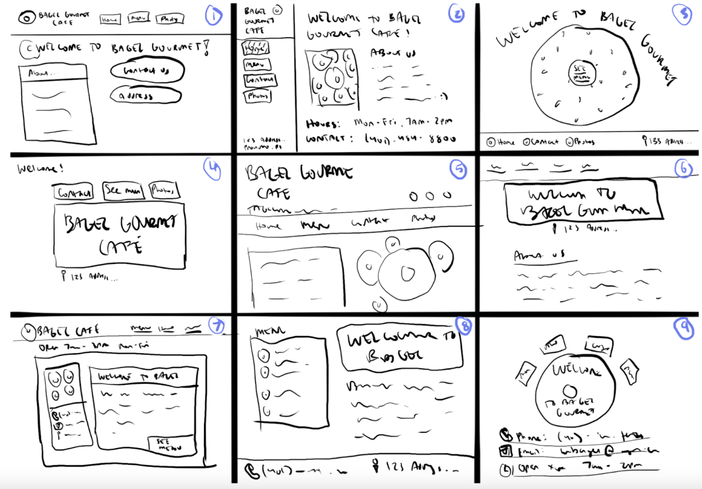
Final Sketch
Afterwards, I analyzed the elements
across my sketches to build a final sketch that incorporated the pieces of design
that resonated with me most, which ended up being a top navigation bar and
a two-column page format.
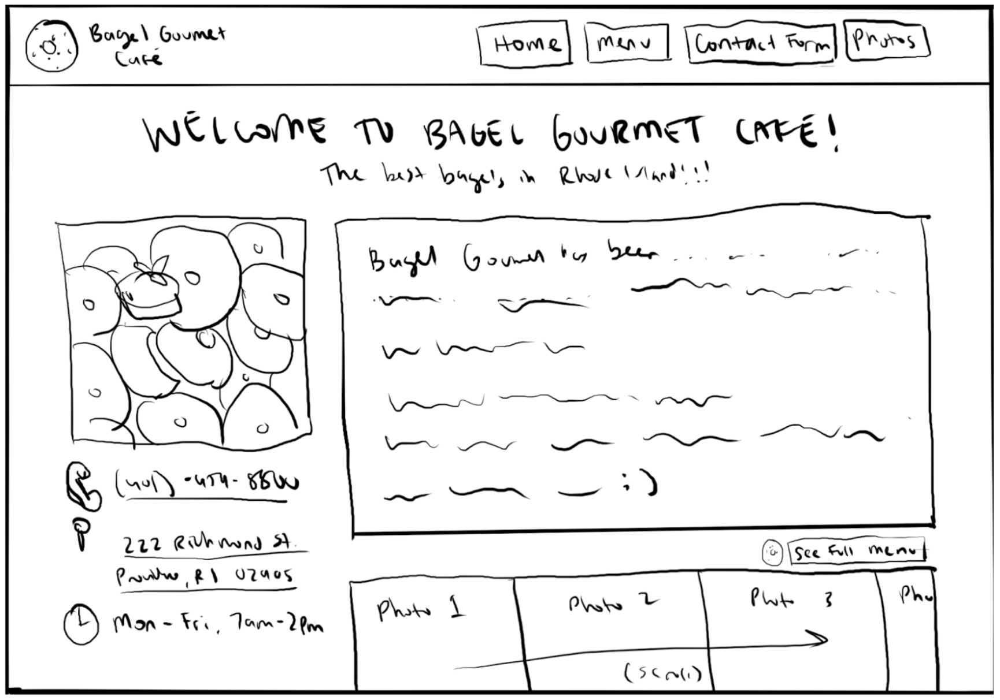
Low-Fidelity Wireframes
Now that I had a base sketch, I used Figma to create low-fidelity wireframes for desktop,
tablet, and mobile screen sizes.
Desktop:
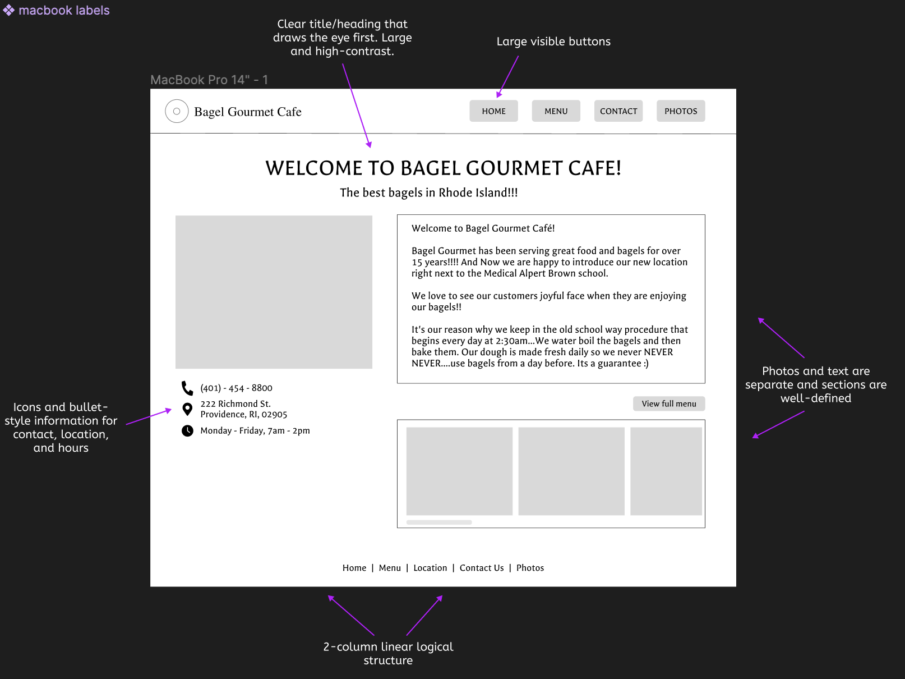
Tablet:

Mobile:
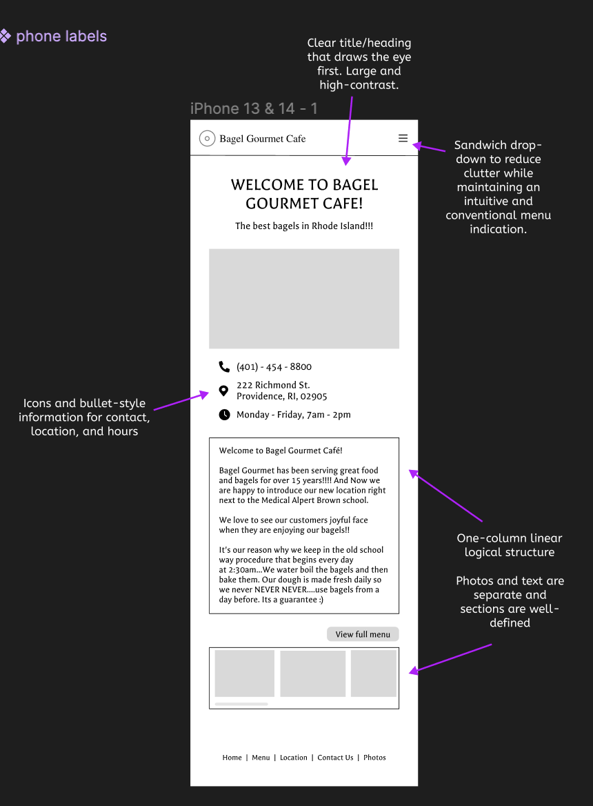
Visual Design Style Guide
As I polished my wireframes and added in detail, I maintained a visual design
style guide that displayed my reusable colors, typography, icons, and button states.
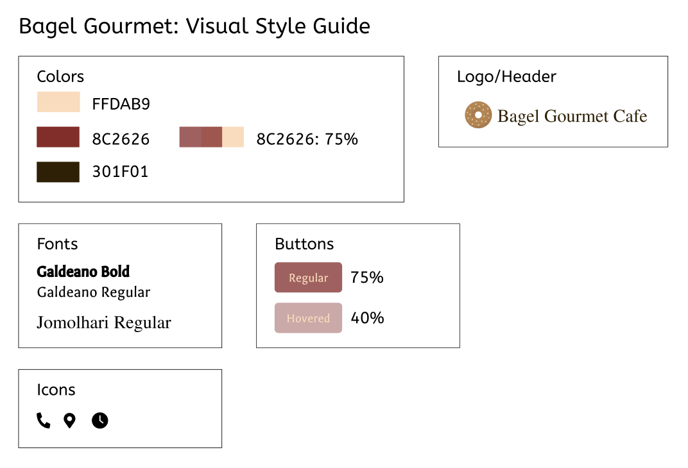
This eased the process of finalizing high-fidelity wireframes for each screen size.
High-Fidelity Wireframes
Desktop:
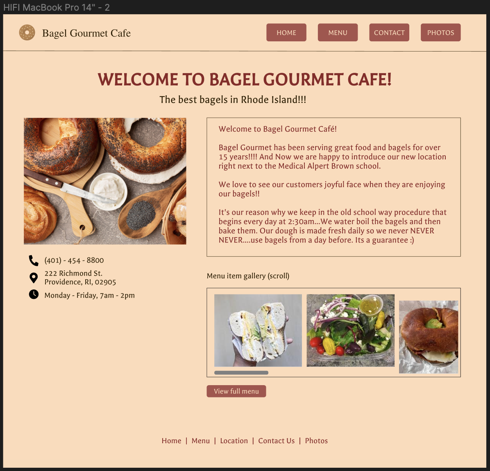
Tablet:
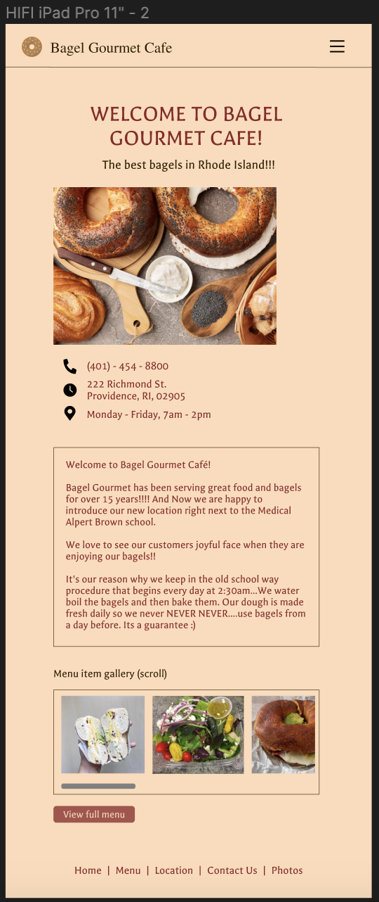
Mobile:
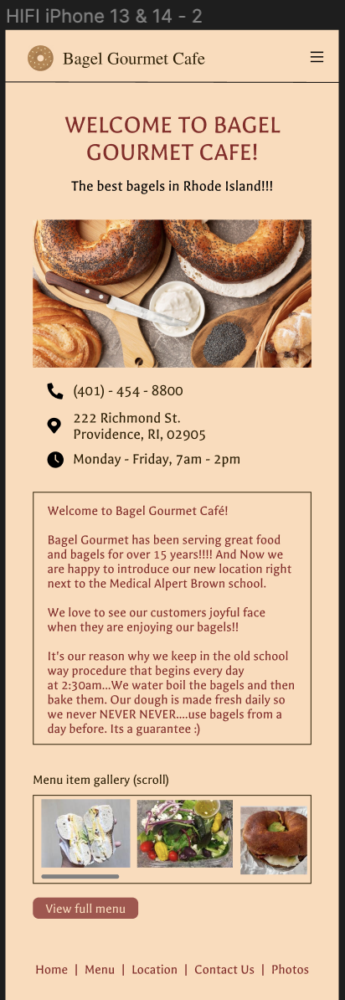
3. Responsive Redesign: Translating to HTML/CSS
The final step was to create the page using HTML and CSS. I also used
a few lines of JavaScript to allow for the opening/closing of the hamburger
menu on tablet/mobile screen sizes.
The site should be fully responsive on a phone (~375x667px),
a tablet (~768x1024px), a large computer (~3840x2160px), and any dimensions in between.
Additionally, in WebAIM it achieves 0 errors and 0 contrast errors. :)
You can checkout the redesigned Bagel Gourmet home page HERE.
Snippets below, resized in Chrome:
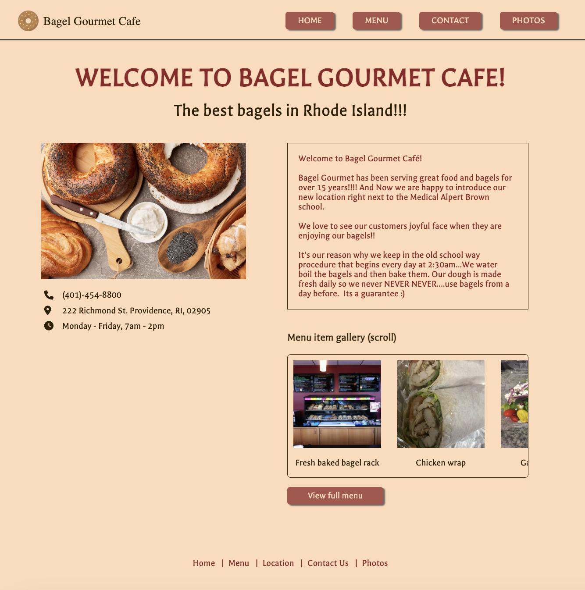
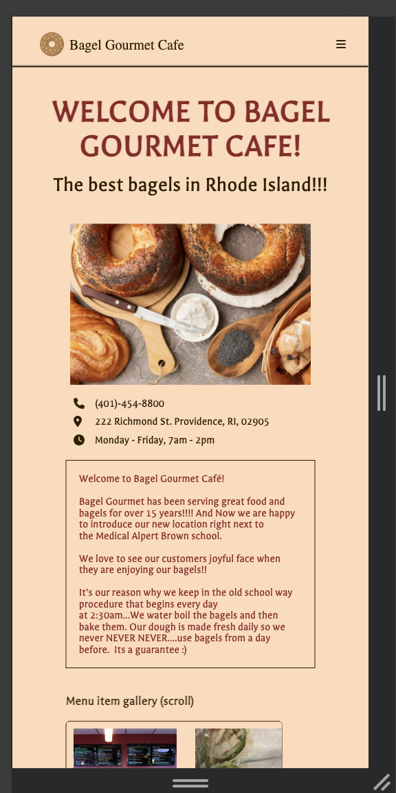
Thank you for reading! Please reach out
claire_yang@brown.edu with any questions/feedback. :)